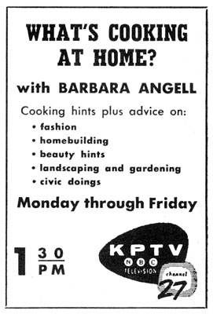
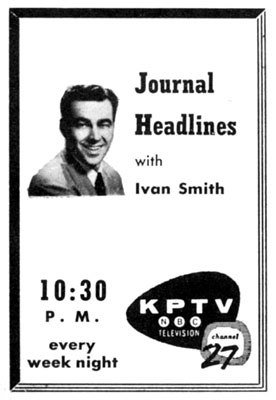
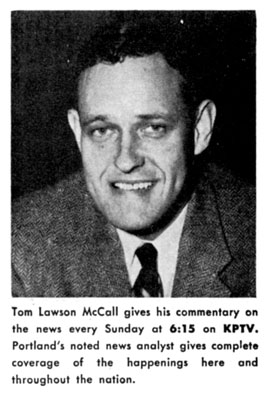
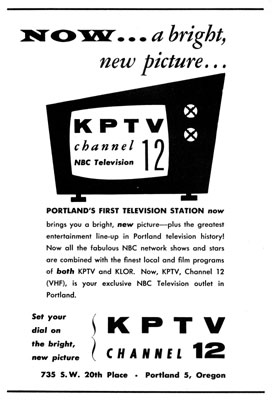
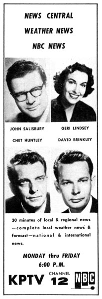

KPTV Ad Museum/1952-1959
A look back at print advertising from newspapers,
magazines, flyers, posters and TV Guide.
|
 |
TV Guide, August 22, 1955
Barbara Angell had established Portland's first daily local program in
April of 1953, with "What's Cooking?" The show proved quite
popular, and, as features were added, became "What's Cooking at Home?"
It later was renamed "Northwest Home," as it was paired with NBC's
popular daytime "Home" program, starring Arlene Francis. |
|

|
TV Guide, August 30, 1955
In the 1950s, reporting the news on television was only a half-a-step
removed from reporting for a newspaper, as evidenced by this newscast.
"Journal Headlines" was a five-minute round-up of the news, provided
mostly from newspaper headlines from earlier that evening. Ivan Smith was KPTV's
big gun when it came to newscasts, which, in this case, made use of his reading
skills, more than his reporting skills.
|
|
 |
TV Guide, April 1, 1956
Sometimes, less is more, as with this ad, which featured a picture and
text only (not even a KPTV logo!) Future Oregon governor Tom McCall started to
make a name for himself as a commentator at KPTV, before making a career at KGW,
beginning in
December of 1956.
|
|
 |
TV Guide, May 12, 1957
On May 1, 1957, KPTV Channel 27 and KLOR Channel 12 merged to become one
station. Most of the KPTV shows followed, along with the NBC network
affiliation. Although Channel 27 will reappear as station KHTV, for about six
months, this ad signals the imminent death of UHF broadcasting in Portland (until
1983), due to the limitations of the technology. New owner George Haggarty knew
that the only way to make KPTV competitive with the other VHF (channels 2-13)
stations was to move it to the VHF spectrum.
|
|
 |
TV Guide, February 10, 1958
John Salisbury and Geri Lindsey were transplants from KLOR, when it
merged with KPTV nine months earlier. As KPTV employees, they were paired up on
the established "News Central," and, together with NBC's hit
"Huntley-Brinkley Report," became a popular early-evening news
offering. |
ON
TO THE 1960s...
  
This
page
last
updated
on
August 17, 2025 |